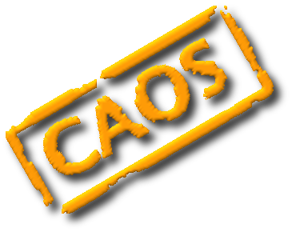

Welcome to CAOS_Software_Package_7.0 - Help

This document contains the headers of the main routine
xxx.pro of each module XXX. You can find more information
about each routine of the CAOS_Software_Package_7.0,
as well as of the whole CAOS PSE, either
by editing the header of the routine itself or, alternatively,
by typing at the IDL prompt:
doc_library, "routine_name"where routine_name is the string corresponding to the name of the routine (e.g. "n_phot", "addnoise", "AIC", "ATA", etc.). The routines available in this version of the Software Package are listed in the following table and described in the next page.
List of Routines
| AIC | ATA | ATM |
| AVE | BQC | BSP |
| CFB | COM | COR |
| DMC | DMI | GPR |
| IBC | IMA | IMG |
| IWS | LAS | MDS |
| NLS | PYR | REC |
| SCD | SLO | SRC |
| SSC | STF | SWS |
| TCE | TFL | TTM |
| WFA |
Compiled by:
- Marcel Carbillet (Lagrange) [marcel.carbillet@unice.fr]
- Andrea La Camera (DIBRIS) [andrea.lacamera@unige.it]
last modified:
Wed Jun 22 16:48:19 2016